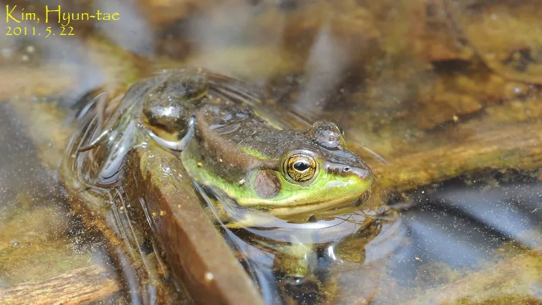

两栖动物 · 动物界
金线蛙 Pelophylax chosenicus

中国东部池塘常见的绿色蛙类，背部两侧各有一条金黄色侧褶，常浮在水面晒太阳，受惊时迅速潜入水底。
- 分类
- 门脊索动物门纲两栖纲目无尾目科蛙科属侧褶蛙属
- 栖息环境
- 池塘、水田、藕田与缓流河沟等静水水域
- 地理分布
- 中国华东、华北及朝鲜半岛的静水湿地
- 保护级别
- IUCN 无危（LC）；中国“三有”保护动物
物种志
金线蛙体长约 5–7 厘米，雌蛙略大。头部扁平，吻端钝圆，眼后有一对明显的鼓膜；体背呈鲜绿色或橄榄绿色，背侧褶明显，呈金黄色或黄白色，从眼后一直延伸到胯部，因此得名“金线蛙”；腹面淡黄色，后肢粗壮，趾间全蹼，善于游泳。
它栖息于池塘、水田、藕田和缓流河沟，白天常浮在水面或趴在荷叶、水草上晒太阳，夜间捕食昆虫、螺类和小鱼。繁殖期在 4–7 月，雄蛙鸣声低沉，雌蛙产卵于水草间，卵块呈团状，蝌蚪以藻类和有机碎屑为食。金线蛙对水质变化较敏感，常被用作水环境监测的指示动物；由于栖息地减少和农药使用，部分种群数量有所下降。
形态与习性
- 食性昆虫、螺类和小鱼
- 体长约 5–7 cm，雌蛙略大
- 繁殖4–7 月产卵，卵块呈团状附着水草
- 活动节律白天晒太阳，夜间捕食
- 寿命约 4–6 年
- 环境指示对水质变化敏感，可作监测物种
趣味知识
- 金线蛙背部两侧的金黄色褶线是它最醒目的识别特征。
- 它常浮在水面或荷叶上晒太阳，一有动静就潜入水底。
- 金线蛙对水质变化敏感，常被用作水环境监测的指示动物。